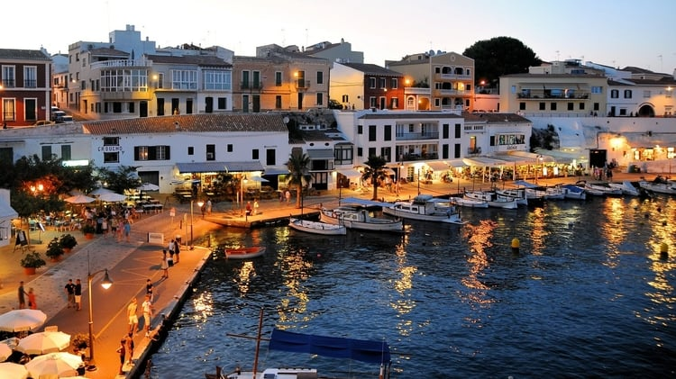

What to expect
Spain is an extremely popular country for travelers in Europe because it has so much to offer. Most visitors go to Madrid and Barcelona, but as spectacular as they are, there is so much more to the country than just those two cities.
Each part of Spain has its own unique flair and in some cases, even language. However, everyone can speak Spanish and the country is very accustomed to tourism so you will get by with English in the main tourist areas.
In addition to Madrid and Barcelona, a trip to Spain would not be complete without a visit to Andalucia (the most Spanish part of Spain), the Balearic Islands (home to Mallorca and Ibiza), and the Canary Islands (volcanic island paradises located off the west coast of Africa), to name a few.
Some other notable destinations within Spain include the Basque Country and Galicia regions, the city of Valencia, and the Pyrenees mountain range. There are also multiple world-famous festivals held in Spain such as La Tomatina (the tomato fight), the Running of the Bulls in Pamplona, and the Carnival in Tenerife.
Spain is one of those destinations that has so much to see and do that you could spend weeks or even months exploring it!

Visas
Spain is part of the Schengen Area which has a single visa policy for all the countries that are in it. Citizens of most developed countries can enter the Schengen Area visa-free for up to 90 days in a 180 day period. If you are not a citizen of a visa-exempt country, you must go to the nearest Spanish embassy and apply for a Schengen Visa to be granted entry.
Vaccination
There are no health risks in Spain requiring any specific travel vaccinations for normal travelers. Make sure you are up to date on your standard vaccinations and consult a health professional for further advice.
Currency_info
The currency used in Spain is the Euro (EUR/€). The notes come in denominations of 5€, 10€, 20€, 50€, & 100€.
The Euro is further divided into 100 euro cents – “centimos” in Spanish – (c). The coins come in denominations of 1c, 2c, 5c, 10c, 20c, 50c, 1€, & 2€.
Tipping Guide
Tipping is not customary in Spain and some locals might even get confused if you tip them, but if you wish to tip for good service, here are some guidelines to follow:
Hotel Bellhops: 1-2€ per bag
Hotel Housekeepers: 1-2€ per day
Restaurant Servers: up to 10% of the total bill
Cafés & Baristas: round up to the nearest whole number
Bartenders: round up to the nearest whole number
Taxi/Uber Driver: up to 5% of the total fare
Tour Guide: up to 10% of the total tour price on single-day tours and up to 10€ per day on multi-day tours
Note: Tips should be left in cash as any tips left on card machines or bills go straight to the owners.
Key Information
Population: 47 Million
Capital City: Madrid
Languages Spoken: Spanish + Catalan, Basque, & Galician
Currency: Euro (EUR/€)
State Railway: Renfe
Driving Side: Right
Largest Airports:
1. Madrid (MAD) – Barajas Adolfo Suárez
2. Barcelona (BCN) – El Prat
3. Palma de Mallorca (PMI)
4. Málaga (AGP) – Costa del Sol
5. Gran Canaria (LPA)
Best time to visit
Keep in mind that the weather in Spain varies by region. The Northwestern coast of Galicia is similar to the weather in the UK (rainy and hard to predict) while the rest of the country is very warm. The summers, especially in inland Andalucia, can get extremely hot (over 40°C / 100°F at least) so care has to be taken when planning your trip.
The best time to visit Spain is during its shoulder seasons (September – October & March – May) when you aren’t surrounded by a million other tourists and the weather is not too hot, but not too cold either. Your flights & accommodation will be cheaper and you won’t have to wait in long line-ups when visiting some of the main attractions.
If you have to travel during the high season, make sure to book your transportation and accommodation in advance as the summer is the busiest time of the year in Spain!
High Season: June – August
Low Season: November – February
Cell phone info
Spain has excellent overall 4G LTE coverage so it is unlikely that you will ever need to use their 3G networks, but it doesn’t hurt to be safe anyways. Make sure your phone is GSM-compatible with at least one of the 3G frequencies and one of the 4G LTE bands used in the country to ensure you will always have connection.
Learn more about this in my Guide to Travel-Ready Phones.
Information about local prepaid SIM cards in Spain
Calling Code: +34
Emergency Number: 112 (Police, Ambulance, & Fire)
3G Frequencies Used: 2100 & 900
4G LTE Bands Used: 3, 7, & 20